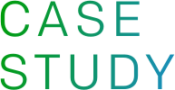

JREMALL
地域の魅力が詰まったお取り寄せグルメが豊富に揃う、JR東日本直営の通販サイト。JR東日本グループ選りすぐりの商品や、全国のスイーツ・産直グルメを購入することができます。ネットでエキナカでは、はこビュンで各地から当日輸送した新鮮な生鮮食品やお酒等も販売しています。
JR東日本グループは、
グループ経営ビジョン「勇翔2034」で掲げる
すべての人の心豊かな生活の実現に向け、
地域の共創パートナーと
一体でサステナブルな地域づくりを推進しています。
グループがもつさまざまなソリューションと地域の魅力を掛け合わせ、
皆さまとともに新たな価値を創造していきます。
グループがもつさまざまなソリューションと
地域の魅力を掛け合わせ、皆さまとともに
新たな価値を創造していきます。
 お知らせ
お知らせ2026年6月1日
プレスリリース
今年の夏も「避暑旅」 がおすすめ！夏のおでかけは東日本エリアの涼しい避暑地へ！［PDF］
2026年5月29日
プレスリリース
「ふくしまのスイーツに出会える”えき市”～水郡線まるかじり～」を水戸駅で開催します！［PDF］
2026年5月29日
プレスリリース
ふくしまの魅力が集結！「ふくしまDCクロージングフェア」を大宮駅で開催します！［PDF］

取り組み事例JR東日本グループが自治体や地域の事業者の皆さまと取り組んだ事例をご紹介します。
JR東日本グループがもつさまざまなソリューションで、地域の豊かな未来づくりをサポートします。
JR東日本グループと持続可能な地域づくりを進める個人・団体の優れた取組みの水平展開を通じ、東日本エリアの地域共創を推進すること、グループ経営ビジョン「変革2027」で掲げる「JR東日本グループだからこそできる『地方創生』」を実現することを目的としています。
青森市文化観光交流施設「ねぶたの家 ワ・ラッセ」にて、第１回JR東日本地域共創アワードを開催いたしました。
宝ものプロジェクトとは、JR東日本が地域の皆さまと、目的地づくり・産業づくり・暮らしづくりを通して、地域の未来づくりに取り組むプロジェクトです。
まだ知られていない地域の資源＝「宝もの」を地域の皆さまと探し、それを磨きあげ、多くの方に知ってもらい、来てもらい、好きになってもらいたい、そんな思いを込めて取り組みます。